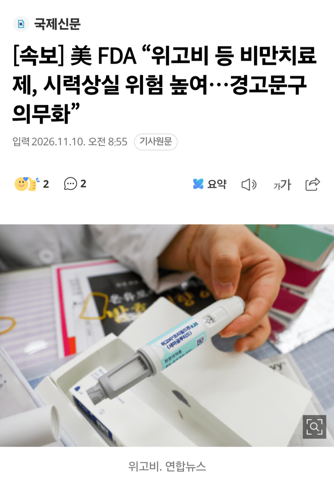

FDA피셜 눈좃됌
도장찍어비림

FDA피셜 눈좃됌
도장찍어비림
5000분의 1.
10진법으로 보면 0.0002%다.
그냥 살다가 갑자기 자연사 할 확률보다 낮아서
이거로 죽으면 자연사로 치는게 더 합리적인 수준임.
ㅅㅂ 대놓고 말하자면 대한민국의 작년 10만명당 자살자가 27.8명인데 백분률로 따지자면 0.0278%.
무려 해당 확률보다 100배 넘는게 자살확률임.
5천분의 1이면 백분률로 따지면 0.02%고
10만명당 20명아님?
이미 시력이..
아 시력 부작용 심각하네
닉값이야 뭐야 ㅋㅋㅋㅋ 아니 그냥 대충봐도 5천분의 1이 0.000까지 내려갈리가 없구만
시력이 아니라
지능이...
다이어트약 부작용 생각하면서 비만에 대한 위험성은 왜 생각을 안하는거지? ㅋㅋ
비먼보다 다이어트약 부작용이 덜하다는건 분명한 사실인데
당뇨로 실명 될 확률과 비교 해 보면 좋을 듯
마운자로는?
모든 GLP-1 계열 의약품
네 에페 니나맞으시고
뭐 국내도 아니고 FDA에서 그렇다는데 에페얘긴 왜자꾸 나오는거임
걍 지랄임. 마치 물을 마시면 안마실 때보다 H2O 중독으로 뒤질 확률이 10만배 늘어난다는 것과 비스무리 할듯.
그딴 얘기를 FDA에서 하진 않으니 차원이 다른 얘기긴 함
뭐씨발아 다른약이랑 비교랑 콜라의 위험성 제로콜라의위험성두개비교해보고 같이적어라 좃같은언론안속는다
네 그렇군요 그래도 에페는 안씁니다